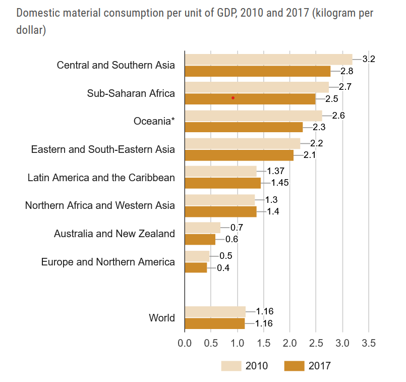

The total amount of raw materials extracted to meet final consumption demands
Population, material footprint and GDP growth index
2000–2017
To achieve sustainable raw material use, it is essential to decouple a society’s development, measured by means of GDP or HDI, from the use of raw materials. One indicator used to evaluate the use of raw materials by society and the achievement of the related SDGs is the “material footprint”, measuring the sum of all raw materials used along the supply chains of goods and services consumed in a country.
The global material footprint is increasing at a faster rate than both population and economic output. In other words, at the global level, there has been no decoupling of material footprint growth from either population growth or GDP growth.
Breaking the link between "environmental bads" and "economic goods."
Decoupling refers to an economy that would be able to grow without corresponding increases in environmental pressure. In many economies, increasing production (GDP) currently raises pressure on the environment. Environmental pressure is often measured using emissions of pollutants, and decoupling is often measured by the emission intensity of economic output.
As we can observe decoupling from the relation between DMC and GDP, we can see the decoupling process from below charts.
Between 2010 and 2017, material intensity decreased in many regions, showing some progress towards the relative decoupling of economic output and DMC. But material intensity increased in other regions, resulting in no change at the global level. Good progress has been made in sub-Saharan Africa, Central and Southern Asia and Oceania (excluding Australia and New Zealand), mostly as a result of increases in GDP, not because of the progress of being sustainable.